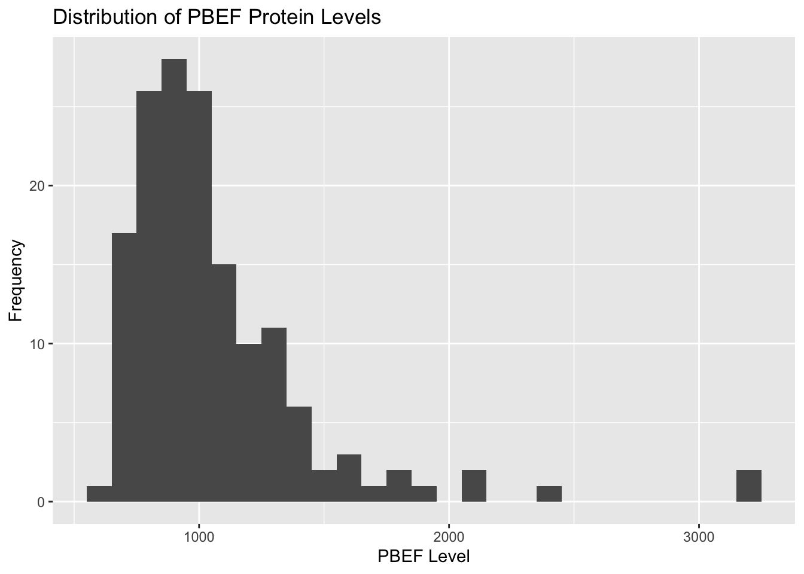
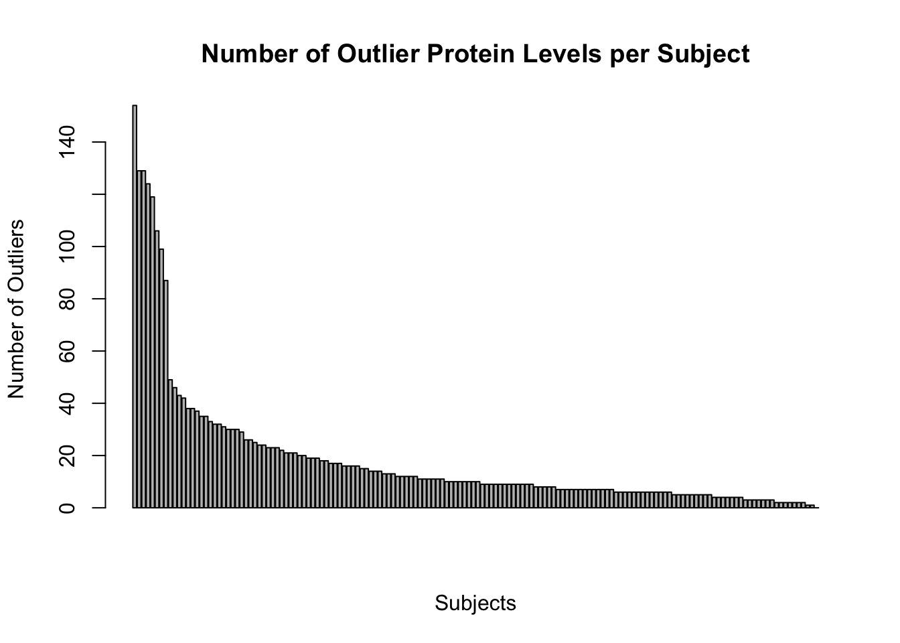

flowchart LR A(154 subjects) --> B(1317 protein measurements from subjects) B --> C(Random Forests for top 10 significant proteins) B --> D(T-tests for top 10 significant proteins) B --> E(Correlation calculations for top 10 significant proteins) C & D & E --> F(Base logistic regression model with proteins in hard intersection) F --> G(Add other significant proteins 1 by 1 to the model if they increase accuracy) G --> H(9 proteins identified as the best panel)
Biomarkers of ASD
Abstract
This report examines how sensitive the protein biomarker analysis of Hewitson et al. (2021) is to choices made in its methodology. The data consist of serum levels of 1,317 proteins from 154 boys, 76 with autism spectrum disorder (ASD) and 78 typically developing (TD). We first explored the preprocessing. Raw protein levels are strongly right-skewed, which motivates the log transformation. Some subjects have many outlying values, but outliers are not concentrated in either group. We then modified the in-class selection pipeline, which combines t-tests and random forest importance and fits a logistic regression to the selected proteins. Selecting proteins on a training partition, rather than on the full dataset, lowered test AUROC from 0.883 to 0.789. This indicates the in-class results were inflated by data leakage. Selecting more proteins and combining the two methods’ lists with a union instead of an intersection lowered performance further, to an AUROC of 0.742. Finally, we searched for alternative panels. A 3-protein panel (DERM, RELT, IgD), chosen by cross-validation, performed comparably to the 6-protein in-class panel (AUROC 0.766 vs. 0.789; accuracy 0.688 vs. 0.656). A 24-protein LASSO panel offered no meaningful improvement (AUROC 0.797). Overall, a small, carefully selected panel does about as well as larger ones, though the small test sets limit how precisely the panels can be compared.
Dataset
The biomarker data in this study comes from a selected sample of 154 youth males aged 18 months to 8 years. All subjects were screened to make sure that they did not have genetic, metabolic, physical, mental, or other neurological disorders. In the sample, 76 were classified as having autism spectrum disorder (ASD) and 78 were classified as typically developing (TD). The average age of the groups was 5.6 years and 5.7 years respectively. Within the ASD group, the 3 ethnicity classifications making up most of the sample are White (33/76), Hispanic/Latino (26/76) and Multiple Ethnicities/Other (9/76). Within the TD group, the 3 biggest ethnicity classifications were White (40/78), African American/Black (14/78) and Multiple Ethnicities/Other (14/78). Within both groups, a majority of subjects did not have any co-morbid conditions. The only co-morbid condition reported that affected a high number of people was seasonal allergies (30/76 in the ASD group and 17/78 in the TD group). All other co-morbid conditions affected no more than 2 people within each group. Lastly, a vast majority of subjects did not report taking psychiatric medications. All other psychiatric medications observed were taken by no more than 2 people.
The data was obtained by performing a fasting blood draw in the morning on the healthy subjects. The blood was then processed and analyzed through a Somascan™ assay to get information on the protein levels. The study obtained the levels of 1317 proteins from each of the 154 subjects, of which 192 proteins did not pass the study’s quality control. For our work, all proteins were included. The data was preprocessed by applying a log10 transformation and then normalizing the data with a z-transformation. Furthermore, outliers with z-scores that were greater than 3 or less than -3 were clipped to 3 and -3 respectively.
Summary of published analysis
The paper used 3 different methods to determine a panel of proteins for identifying ASD. The first method utilized a random forest that was trained 1000 times. Proteins were ranked based on their mean decrease in the Gini index, and the top 10 were selected for the random forest model. The second method utilized multiple t-tests. T-tests were conducted to identify the top 10 proteins with the most significant t-test values for identifying ASD. The last method utilized a correlation approach by calculating the correlation coefficient between protein levels and Autism Diagnostic Observation Schedule (ADOS) scores. The 10 proteins with the highest absolute value correlation coefficients were selected.
From the 3 methods, the paper found 5 proteins that were common across all testing methods. A logistic regression model was fit to these 5 proteins as a baseline for testing the predictive accuracy. Additional proteins that were identified from the other models were added one by one to see if they added any predictive power. The process was repeated 1000 times. Confounding factors were also tested by running t-tests and calculating Spearman’s rank correlation.
The 5 core proteins that were flagged as significant in all 3 models were MAPK14, IgD, DERM, EPHB2 and suPAR. 4 additional proteins from the models were found to have increased the predictive power and AUC of the logistic regression model: ROR1, GI24, elF-4H, and ARSB. The AUC value for the model with these 9 proteins was 0.860±0.064. The sensitivity was 0.833±0.118 and the specificity was 0.846±0.118.
Findings
Impact of preprocessing and outliers
A couple of important choices were made in the data preprocessing. These were: (1) log-transforming the data, and (2) trimming outliers. These transformations were performed because the several of the distributions of protein levels had very large outliers which would have skewed the analysis. We investigated the distribution of protein levels for 5 proteins (PBEF, Carbonic anhydrase III, FGF-8B, TRAIL R1, and CNTN2) and observed a noticeable right skew in all of them. Below is a distribution of 1 of proteins observed.

Because of the skew of the raw protein levels, a log-transform would help transform the data to be more symmetric for the tests completed.
We also investigated the data before trimming outliers. Despite nearly every subject having some number of proteins with outlier levels (>3 standard deviations from the mean), only 8 have more than 80 outliers, while the rest have under 50.

Lastly, we looked at the number of outliers in each group. Since the number of outliers did not seem to significantly differ between the ASD and TD groups, trimming outliers should not bias the data in one direction too much.
| Group | Average # of Outliers | Total # of Outliers |
|---|---|---|
| ASD | 17.04 | 1295 |
| TD | 19.65 | 1533 |
Methodological variations
| Analysis | Train/test split | Proteins | Sensitivity | Specificity | Accuracy | AUROC |
|---|---|---|---|---|---|---|
| In-class (selection on full data) | 80/20 | NA | 0.812 | 0.733 | 0.774 | 0.883 |
| Selection on training set only | 80/20 | 6 | 0.688 | 0.625 | 0.656 | 0.789 |
| Training only + top 15 + union | 75/25 | NA | 0.579 | 0.650 | 0.615 | 0.742 |
Selection on a training partition. In the in-class analysis, the t-tests and random forest were run on the full dataset before the data was split. The test subjects therefore helped choose the proteins they were later used to evaluate. When we set aside 20% of the data first and ran every selection step on the training set only, the hard intersection gave a 6-protein panel (DERM, IgD, PTN, RELT, MAPK14, MAPK2). Test AUROC fell from 0.883 to 0.789, and accuracy fell from 0.774 to 0.656. This drop suggests the in-class results are optimistic because of data leakage. The training-only figures are a more honest estimate of how the panel would perform on new subjects.
Larger panels and a fuzzy intersection. We then took the top 15 proteins from each method instead of the top 10. We also replaced the hard intersection with a union, keeping any protein selected by either method, which gave a panel of 21 proteins. Selection was again done on a training partition (75/25, stratified by group). Performance dropped further: AUROC was 0.742, accuracy 0.615, sensitivity 0.579 and specificity 0.650. These two changes were applied together, so we cannot fully separate their effects. Both, however, push in the same direction: they add lower-ranked proteins that carry weaker signal. With roughly 115 training subjects, a logistic regression on this many predictors likely overfits the training data rather than gaining predictive power. Being more selective, not less, appears to work better for this dataset.
These comparisons rely on a single test set each, of 31–39 subjects, so one misclassified subject shifts accuracy by about 0.03. The analyses also used different random splits. The direction of the changes is more reliable than their exact size.
Improved classifier
| Panel | Proteins | Sensitivity | Specificity | Accuracy | AUROC |
|---|---|---|---|---|---|
| In-class method (training only) | 6 | 0.688 | 0.625 | 0.656 | 0.789 |
| Simpler panel (DERM, RELT, IgD) | 3 | 0.812 | 0.562 | 0.688 | 0.766 |
| LASSO | 24 | 0.688 | 0.625 | 0.656 | 0.797 |
We benchmarked two alternatives against the in-class method. All three panels were selected using only the training data and evaluated on the same held-out test set.
Simpler panel. We ranked the 6 baseline proteins by t-test p-value and fit logistic regressions using the top 1 through 6 proteins. To avoid using the test set to choose the panel size, we chose it by 5-fold cross-validation on the training data. We picked the smallest panel whose cross-validated AUROC was within 0.05 of the best. This gave a 3-protein panel: DERM, RELT and IgD. On the test set it reached an AUROC of 0.766 and accuracy of 0.688, compared with 0.789 and 0.656 for the full 6-protein panel. Halving the panel therefore gives comparable performance, with slightly higher accuracy and sensitivity and slightly lower AUROC and specificity. A smaller panel would be cheaper to measure and easier to validate clinically.
LASSO panel. We also fit a LASSO logistic regression on all proteins, choosing the penalty by 10-fold cross-validation on the training data (λ.1se). LASSO selected 24 proteins, including 5 of the 6 baseline proteins (all except RELT). Its test AUROC was 0.797, and its sensitivity, specificity and accuracy matched the baseline. LASSO therefore did not meaningfully improve on the in-class panel and used four times as many proteins.
Repeated splits. Because a single test set of 32 subjects is noisy, we repeated the whole procedure (train/test split, t-test and random forest selection, simpler panel of size 3, and LASSO) over 20 random splits and averaged the test set metrics.
| Panel | Sensitivity | Specificity | Accuracy | AUROC | AUROC SD |
|---|---|---|---|---|---|
| In-class method | 0.722 | 0.719 | 0.720 | 0.780 | 0.055 |
| Simpler panel (3 proteins) | 0.719 | 0.706 | 0.712 | 0.773 | 0.048 |
| LASSO | 0.706 | 0.762 | 0.734 | 0.804 | 0.059 |
Across splits, the 3-protein panel stays within 0.01 AUROC of the in-class panel, so the simpler panel holds up beyond the single split above. LASSO has the highest average AUROC (0.804), but its gain of about 0.02 is smaller than the split-to-split standard deviation (about 0.05) and it needs far more proteins.
Overall, the simpler 3-protein panel is the most practical result: it performs about as well as the in-class panel with half the proteins. DERM and IgD also appear in the published core panel. LASSO may offer a small improvement, but not one we can distinguish from variation between splits.